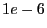

Next: Attributes Up: Variables and Constraints Previous: Constraints
As noted at several places in this section, finite-precision arithmetic limits the precision of the solutions Gurobi computes. This limitation is managed through numerical tolerances in most cases; we treat a solution as satisfying a constraint if the violation is smaller than the corresponding tolerance. The default tolerances are chosen to be sufficiently large so that numerical errors aren't an issue for most models.
Unfortunately, some models suffer from severe ill conditioning, which can greatly complicate the search for a solution. This can show itself in a few ways. Ill conditioning can severely hurt performance, and it can lead to solutions whose constraint violations are larger than the tolerances.
Ill conditioning is a measure of the amount of error that can result when solving linear systems of equations. As noted earlier, linear and mixed-integer programming are built on top of linear solves, so errors in solving linear systems directly lead to errors in LP and MIP solutions. Serious problems arise when the error in solving a linear system is comparable to the desired tolerance. If you want to solve a linear programming problem to the default feasibility tolerance of , for example, and if your linear system solves produce errors that are also roughly , then you have no way of knowing whether your current solution is truly feasible. This can lead to oscillations, as your solution bounces between feasible and infeasible due to nothing more than numerical error, which can make it extremely difficult to achieve forward progress towards an optimal solution.
When solving linear and quadratic programming problems, we recommend that you check final primal and dual constraint violations. Duality theory states that, if your solution is primal feasible, dual feasible, and complementary, then you have an optimal solution. Complementarity is automatically enforced by the simplex method, so achieving primal and dual feasibility (to tolerances) assures that the solution is optimal (to tolerances).
When solving a MIP model, there is unfortunately no simple method available to check the optimality of the result. While we work hard to identify and manage the negative effects of ill conditioning, we are unable to provide a mathematical proof that the solution returned is truly optimal.
For additional information on numerical issues, please reffer to the Gurobi Guidelines for Numerical Issues Section of this manual.